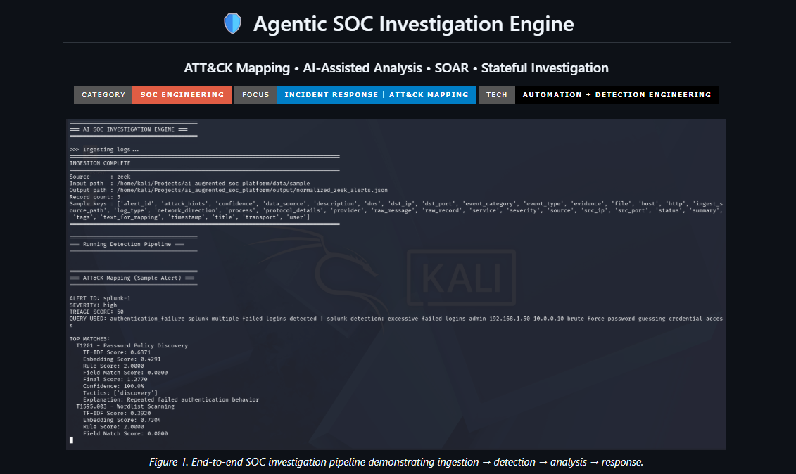
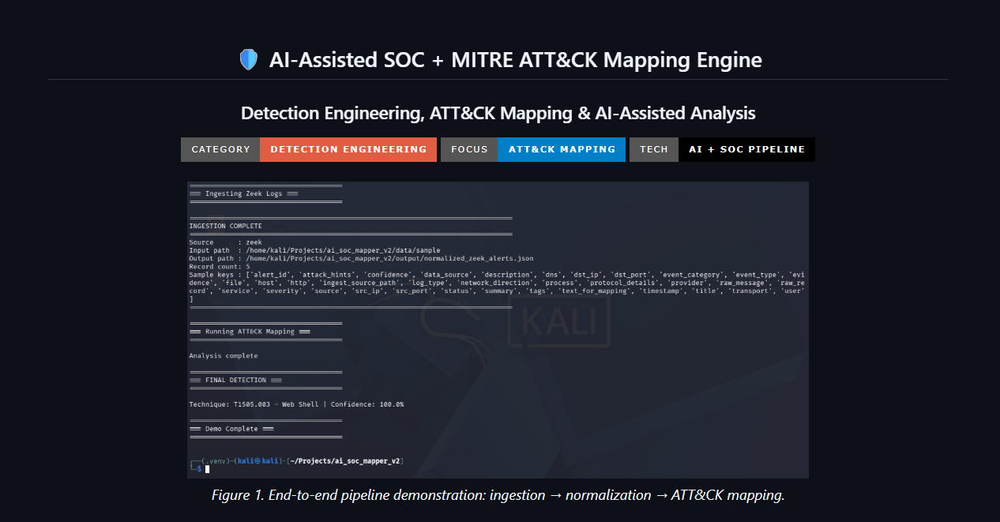
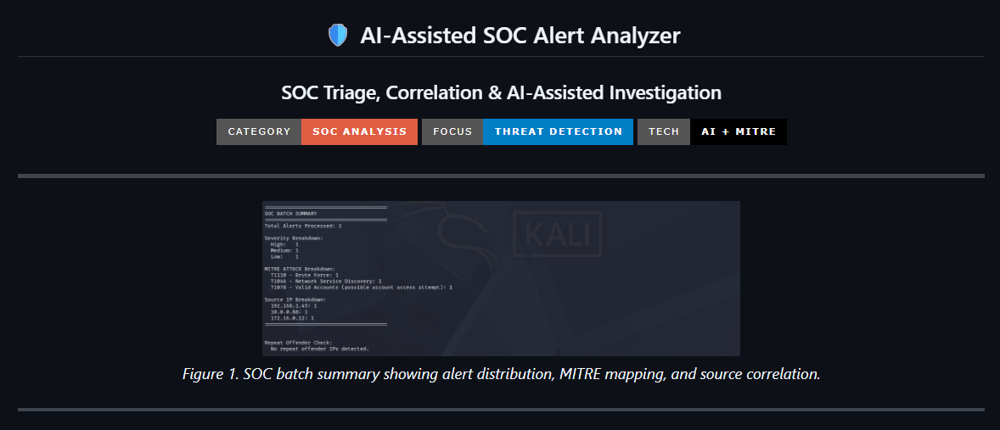
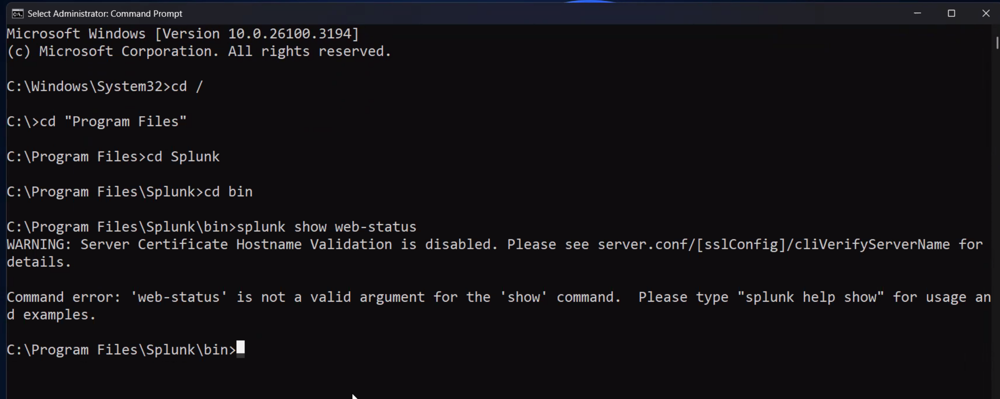
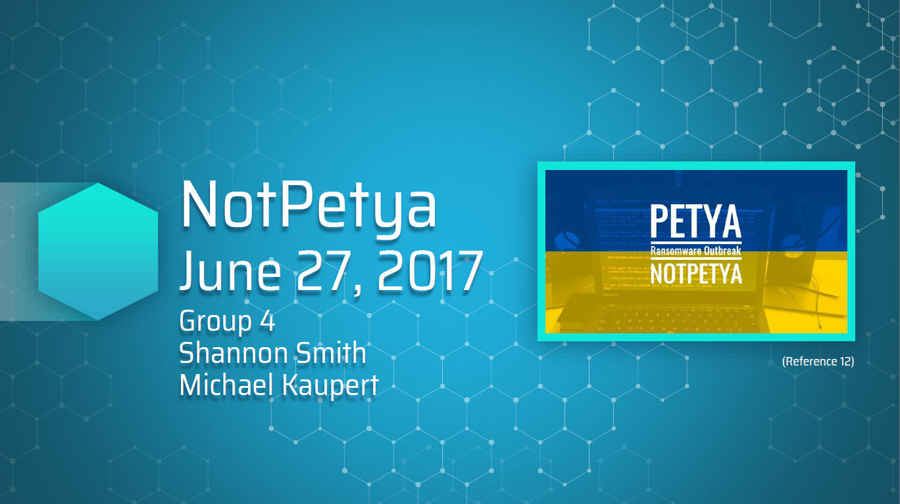
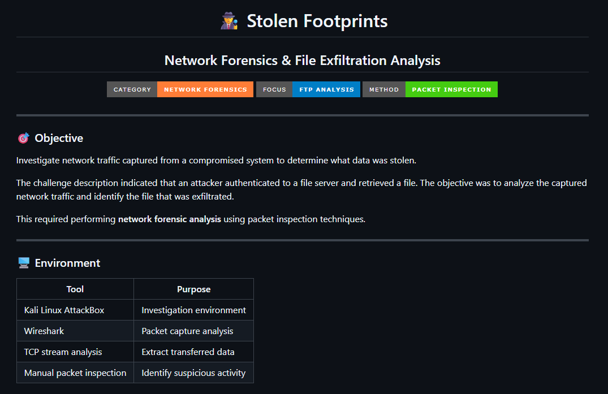
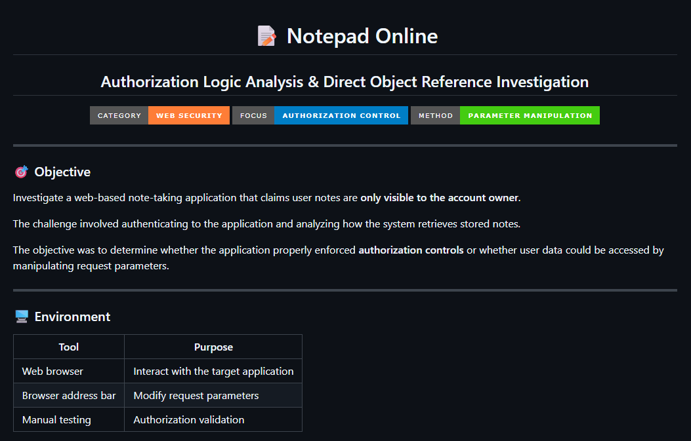
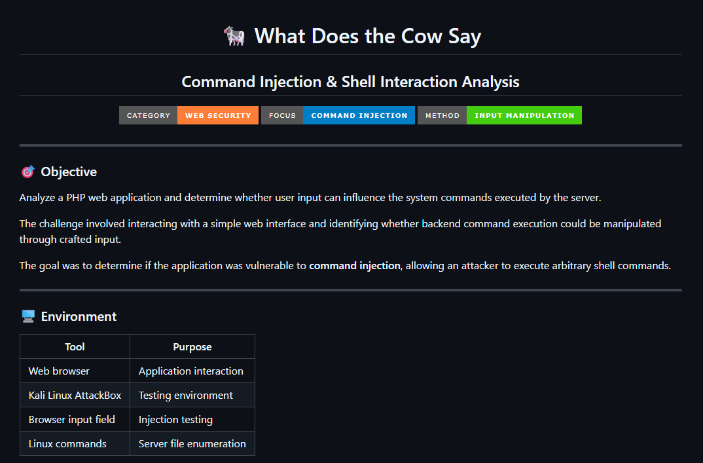
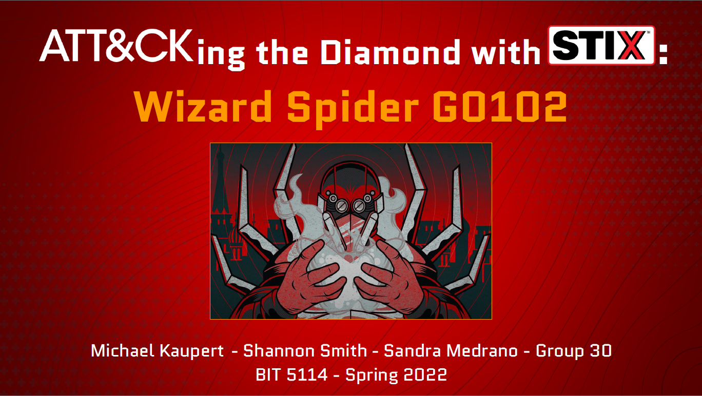

Projects










tools & platforms
Top Skills
Additional Tools & Technologies
credentials
Certifications
Click any badge to open details, verify the credential, or view the certificate PDF.